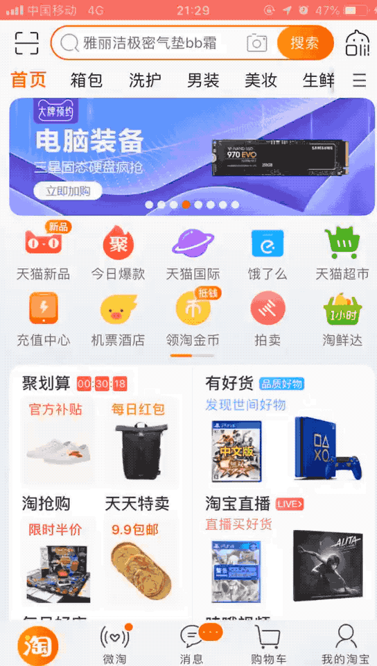
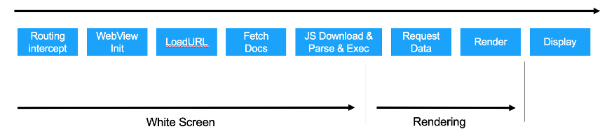

This document aims to identify representative use cases of where WebViews are being used, regardless of the platform and type of device they're used on, identify the issues that arise from these usages and determine whether these issues can be addressed through improvements to the Web Platform, the surrounding ecosystem (e.g. documentation, testing frameworks) or through other mechanisms.
This is the skeleton of the core document on which the WebView Community Group will focus in its first phase of work.
Introduction
The WebView Community Group aims to identify, understand and reduce the issues arising from the use of software components (typically referred as WebViews) that are used to render Web technology-based content outside of a Web browser (Native Apps, MiniApps, etc).
This document contains sections describing the use cases that were contributed by multiple authors. Since this document is a group note, additional use cases will be added in future revisions of this document.
Usage Scenarios
Load a WebView Page
Submitter(s)
Qing An, Alibaba
Motivation
It is quite common to use WebView in Native App development, due to WebView’s benefit of cross-platform interoperability. But the page loading performance of WebView cannot satisfy Native App well, which means the loading of a WebView page is quite slower than loading a Native page.
The below is WebView page loading, it firstly shows the white screen.
WebView page loading
But for the Native page loading as shown below, it shows the skeleton immediately, which gives a better user experience compared with WebView.

Native page loading
Therefore, how to enhance the loading performance of WebView page needs to be addressed.
Stakeholders
Stakeholders include:
WebView provider: browsers, deciders on how to enhance WebView
WebView user: Native App or MiniApp which rely on WebView to render pages
End user: users of the Native App or MiniApp are indirectly using the pages and functions implemented by WebView
Analysis
The reason of long white screen is due to serial execution in loading a WebView page. The duration of white screen directly depends on the time cost from routing intercept to JS download & parse & exec as described in the following figure.

Procedure of loading a WebView page
Preload defines provides a declarative fetch primitive that initiates an early fetch and separates fetching from resource execution
How is the issue solved in the Browser, and what’s more is needed?
In the Browser: Prefetch, Preload and Next are used to pre-request resources (e.g. HTML, CSS, JavaScript, Img, etc.), but they are not supported or only partly supported by WebView.
What’s more: how to pre-request the data (JSON, XML, etc.)
Take e-commerce App as example. WebView is used to render the page of product list and product info. So, a request to fetch the data is needed, and the data is described and transferred in the format of JSON or XML. Sometimes, user info is also carried in the request, to obtain the personalized product info. If the data can be pre-requested, the performance of loading a product page can be increased.
Requests/responses sharing and proxy between Native and WebView
Submitter(s)
John Riviello
Jiasheng Wu, ByteDance
Motivation
In a hybrid Native/WebView app, some Native app may load first-party website or third-party website through WebView. So, the Native app and the WebView may make the exact same calls in first-party business, or Native app handles the resource request on behalf of WebView and the corresponding response data returned to WebView can even be different with what is received by Native from the backend server. Also, not all requests want to be proxied through Native, WebView user want to proxy a small number of requests locally to load offline resources.
Some scenarios:
Document access control: it is expected to manage the access control of Web access documents, allowing different users to access documents of different levels.
Security firewall: In order to meet compliance requirements, network engineers want to audit requests within the app, and do not allow insecure requests to be sent on the web.
Transcoder: In special scenarios, we may need to convert GIF images to JPEG images to send to reduce traffic, and may also need to translate documents to meet communication needs in different language scenarios. For example, it's hard for a user to communicating in English. When communicating, the user can type Chinese and it will be automatically translated into English.
Anonymous: Some users may have higher requirements for the privacy of Web access, requiring that requests within the Web must remove identity features (such as client IP address, From header, Referer header, cookie, URI session ID), providing a high degree of privacy and anonymity.
Reducing network requests: A hybrid app (in the sense that some screens are native code and other screens are Webviews) may make some of the same network requests (HTTP GET, POST, PUT, DELETE, or other network connections supported by webviews such as Web Sockets and WebRTC) in both the native screens and the webview screens. Being able to easily share those responses between native and web (while maintaining proper HTTP cache semantics) would reduce redundant requests, saving end-users bandwidth and reducing server traffic.
Stakeholders
Stakeholders include:
WebView provider: Apple, Google, deciders on how to enhance sharing between WebView & Native
WebView user: Native Business rely on WebView to send internal request, or load offline resource
End user: users of the App save bandwidth by not having to make duplicate calls
Analysis
This is currently even possible in some way, but it is not a recommended pattern. So making this a standard that is easy to use for both Native and WebView developers would be a win for both groups.
shouldInterceptRequest in Android WebView provide develop with optional network interception capability.
Related W3C deliverables and/or work items
N/A
How is the issue solved in the Browser, and what’s more is needed?
N/A
The Origin in a WebView for locally hosted content
Submitter(s)
Niklas Merz, Apache Software Foundation
Motivation
Up to 30% of apps found in the App stores (Apple and Google) are built with frameworks like Apache Cordova and CapacitorJS. Those two frameworks use one big Webview for providing app developers a native wrapper and some plugins for their Web App. App developers build their Web application and put the HTML, CSS and JavaScript files in one folder. The framework then takes care of building a Native App project and bundling the Web code as a Native application ready to distribute via the App stores.
App developers usually only need knowledge in HTML, CSS and JavaScript and can call native OS features via plugins. The frameworks provide a bridge that makes these native features available as JavaScript functions inside the WebView. Because of this, the locally hosted Web application "should just work as published on the Web". Connections to the backend are usually done via fetch/XHR. Because the origin for the app code is different than the backend, there is always CORS involved.
Cordova used to host the bundled web content via `file://` URLs for a long time. In recent years many apps needed to switch to a "proper origin" mainly because of two reason:
Web frameworks like React or Angular use their own router framework that relies on the origin and paths. The just don't work with file URLs.
HTTP requests from file URLs have quirks in the CORS handling. If I recall correctly the webviews started to set the `Origin` HTTP header to `null` which made it difficult to make requests to backends and APIs.
Therefore Capacitor and Cordova changed the defaults to hosting the content on their "special origins" based on the fact that Android `https:://custom` and iOS `custom:\\custom` are using different approaches for their origins in WebViews.
Android has WebViewAssetLoader that let's you create a "fake" domain to serve files to the webview. Therefore you can access local files via `https://myappcode/index.html` for example. WebViewAssetLoader only allows you to serve GET requests and access to the HTTP request is limited.
iOS let's you implement a custom URL scheme like `myapp://mycode` and you can access the HTTP request and repsonse quite freely to implement custom logic around that. This is called WKURLSchemehandler.
Stakeholders
WebView provider: Apple, Google, deciders on how to support having a standardized origin of web content hosted by the App for the Webview
Analysis
Apps built with this hybrid approach in mind are really dependent on making CORS work and HTTP requests possible on their own web content. This approach might benefit from a standardized way of providing web content from the app to the webview. This content could be considered secure.
Androids and iOS implementations provided solutions for many problems and solved some of those mentioned. But there still exist some issues. Some of them are:
With some backends it might cause problems that you need to allow two different origins for CORS. Android only allows `http(s):` with WebViewAssetLoader and iOS only `custom:` etc with WKURLSchemeHandler. So you can't have one static allow setting for CORS but need its to be dynamic or the backend needs to allow multiple origins. (Some backends might not allow this.)
Anti tracking features of Webviews might block authentication cookies. Most Apps have gotten rid of cookies for good but sometimes cookies are still used. Especially iOS implemented a stronger Intelligent Tracking Prevention in Webviews that blocks many cookies on CORS requests. In some cases even legitimate authencation cookies to the apps backend can get blocked and developers either need to switch to a different authentication method if possible or find workarounds.
Androids and iOS implementations of this "custom scheme API" are quite different. iOS WKURLSchemeHandler is quite powerful. As an app developer you can use the scheme handler for your custom scheme like `app://custom` in many different ways to intercept HTTP requests from the WebView and provide a custom response. From providing local files to proxying requests in the native layer everything is possible. Androids WebViewAssetLoader is more limited with only loading local files in mind. If you implement a custom domain you can mostly provide content to GET requests but your access to the request and response of the HTTP request is limited.
The options to allow/deny traffic to Web content in in Webviews are not really standardized as well. iOS has App Bound Domains but this has it's own capabilities and limitations.
So, maybe a standardized APIs for Webviews to load content not found on the Web but provided to the Webview on a "proper origin" can solve this challenge.
Related W3C deliverables and/or work items
N/A
How is the issue solved in the Browser, and what’s more is needed?